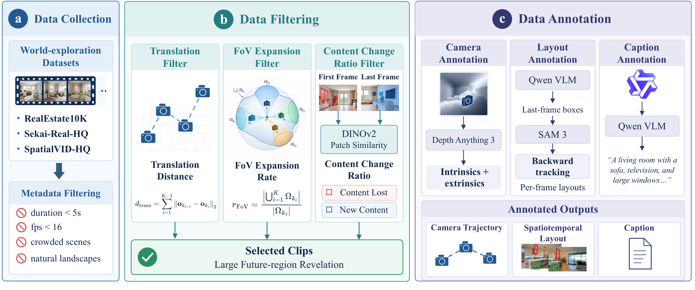
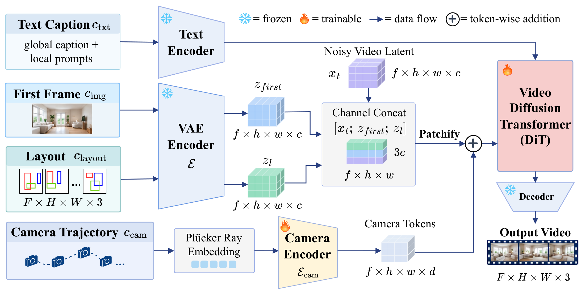
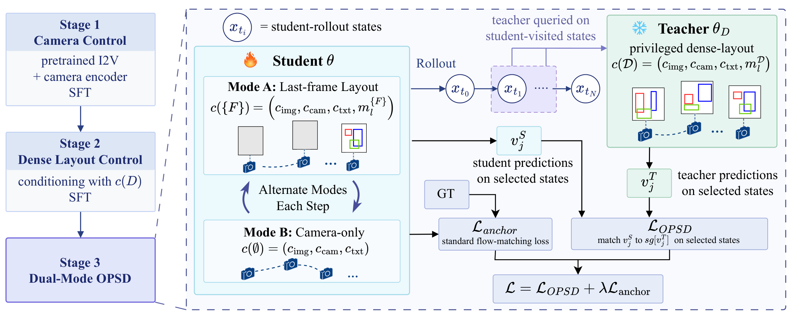

TL;DR We present LIFT, a unified video generation framework that complements camera control with future-layout control under large viewpoint changes using on-policy self-distillation.
We introduce LIFT, a unified image-to-video generation framework that complements camera control with Layout-In-FuTure control, enabling users to specify what should appear in a future view and where it should appear. This addresses a practical need in controllable video generation: given an initial image, users often care not only about how the camera moves, but also about what the scene should look like at key future moments, especially the final frame. Existing camera controls specify viewpoint trajectories, while text prompts provide only coarse semantic guidance; neither precisely determines the content and spatial layout of future views. This limitation becomes particularly pronounced under large viewpoint changes, where the camera reveals regions that are not visible in the first frame. LIFT therefore uses the last-frame layout as an explicit control signal for the desired future scene. Since learning from such sparse layout guidance is substantially more challenging than conditioning on dense per-frame layouts, we introduce on-policy self-distillation (OPSD) to transfer the control capability of a dense-layout teacher to a last-frame-layout student. We further curate LIFT-Vista, a dataset featuring large viewpoint changes with camera and temporally consistent layout annotations. Experiments show that LIFT improves video quality, future-layout controllability, and camera controllability over other methods.
We curate LIFT-Vista, a dataset tailored to large viewpoint changes. Our automatic pipeline identifies videos with substantial future-region revelation and produces temporally consistent camera and layout annotations.
The curated data contains 120,898 clips in total and a 58,272-clip subset with joint layout and camera annotation. The layout annotations contain an average of 5.5 objects per clip and cover 8,302 categories, including indoor and outdoor objects. 84.8% of the clips contain objects that are invisible in the first frame but appear in future views, directly supporting our future-view layout-control setting.

Data curation pipeline. (a) World-exploration video collection and metadata filtering. (b) Clip selection based on translation distance, FoV expansion and content change. (c) Annotation of camera trajectories, spatiotemporal layouts and captions.

(a) Joint camera- and layout-conditioned DiT. Our model backbone is a diffusion transformer conditioned on four signals: the first frame, a text caption, a camera trajectory and a spatiotemporal layout. The layout bounding boxes are rendered into a pixel-aligned layout map video in which every object keeps a unique colour across frames. Layout VAE latent is channel-concatenated with the noisy video latent and the first-frame latent. Color-referenced layout local prompts are appended to the global caption. The camera is represented by Plücker ray embeddings and injected into the DiT stream through token-wise addition.

(b) Dual-mode on-policy self-distillation training. LIFT operates in two inference modes: a single-condition mode, conditioned only on the camera trajectory, and a dual-condition mode, conditioned on both the camera trajectory and the last-frame layout. Direct training with last-frame-only layouts under standard supervised flow matching struggles to exploit the sparse layout condition, leading to inferior future-layout control, while progressively reducing layout density through SFT incurs substantial training cost with limited gains. We therefore introduce on-policy self-distillation (OPSD), where a dense-layout teacher supervises the last-frame-layout student on student rollout states. Moreover, camera and layout conditioning are inherently coupled, as dense layouts also capture scene evolution induced by camera motion. To exploit this coupling, we train a shared student across both the single-condition and dual-condition modes while distilling from the same dense-layout teacher. This dual-mode training encourages the two forms of control to reinforce each other, improving both camera and future-layout controllability.
We compare against three categories of controllable video generation methods: camera control, object motion control, and joint camera-and-object motion control. For camera control, we evaluate against two recent state-of-the-art methods, Uni3C and GEN3C. For object motion control, we compare with MagicMotion, which uses bounding-box trajectories to specify object motion. We further include Direct-a-Video as a joint-control baseline. For a fair comparison to baselines, LIFT is conditioned on the first frame, the camera trajectory, the caption and the last-frame boxes only, whereas MagicMotion and Direct-a-Video receive the full per-frame box trajectories.
@article{ji2026lift,
title={LIFT: Layout-In-Future Video Generation under Large Viewpoint Change via On-Policy Self-Distillation},
author={Ji, Shengxiang and Wang, Boyang and Xu, Haiyang and Li, Bingnan and Mao, Yucheng and Chen, Zeyuan and Shan, Xiaojun and Zhang, Xiang and Hua, Gang and Xie, Jianwen and Cheng, Zezhou and Tu, Zhuowen},
journal={arXiv preprint arXiv:2609.38146},
year={2026}
}